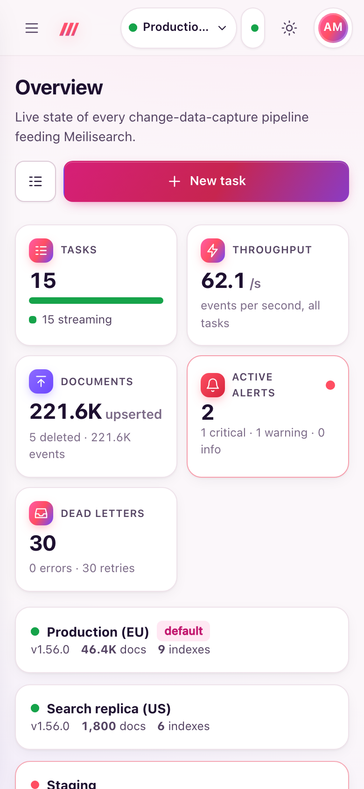
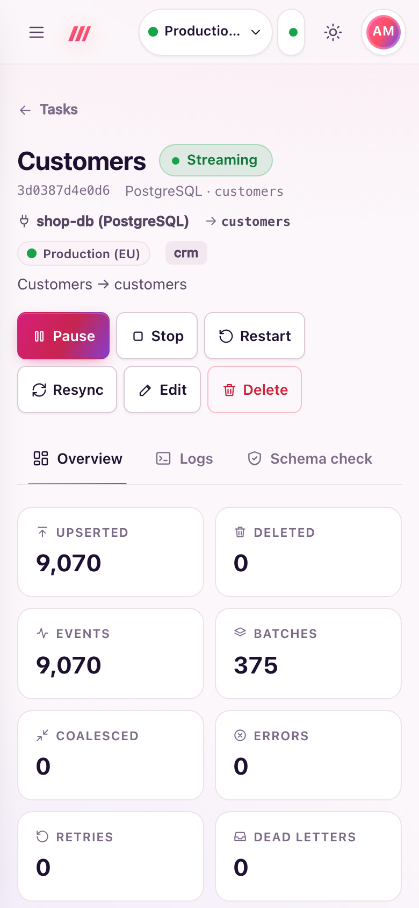

Mobile and app install
The dashboard is a progressive web app: it works on phones, can be installed like an app on desktop and mobile, opens instantly from a cached shell, and updates itself when you deploy a new version.

Requirements
Browsers register service workers, and offer installation, only in a secure context: HTTPS, or http://localhost. Behind a TLS proxy (see Reverse proxy and TLS) everything works; on plain HTTP over the network the dashboard still works, without install and offline support. The dashboard must be served at the root of its host name.
Install the app
- Chrome, Edge and other Chromium browsers (desktop and Android): open the user menu (your initials, top right) and choose Install app. The item appears when the browser offers installation; the browser's own install icon in the address bar works too.
- Safari on iPhone and iPad: tap Share, then Add to Home Screen.
- Safari on macOS: File → Add to Dock.
The installed app is called Meili CDC, opens on the overview in its own window (standalone display, with window-controls overlay where supported) and offers shortcuts to Tasks, New task and Alerts (long-press or right-click the icon). Sign-in uses the same session cookie as the browser.
Offline behaviour
- The app shell (the page, scripts, styles, icons) is cached, so the app opens even without network.
- Live data is never cached:
/api,/mcp,/metrics,/healthzand/debugalways go to the server. - While offline, the top bar shows Offline instead of Live, and the dashboard reconnects by itself when the network comes back.
- Pages are fetched network-first, so an online visit always gets the latest page; static files are served from the cache and refreshed in the background.
Updates
Each release embeds a hash of the dashboard's files in its service worker, so a new version gets a new cache and the old one is removed. When a new version is deployed, the app finds it (also each time the tab comes back to the foreground) and shows an Update available notice with a Reload button; the page reloads only after you accept. The service worker and the manifest are served with Cache-Control: no-cache, so browsers see updates at once.
Responsive layout
Every page adapts from phone to wide screens: the sidebar collapses behind a menu button, tables reflow to fit narrow screens, and the task wizard shows one step at a time with a progress bar.
